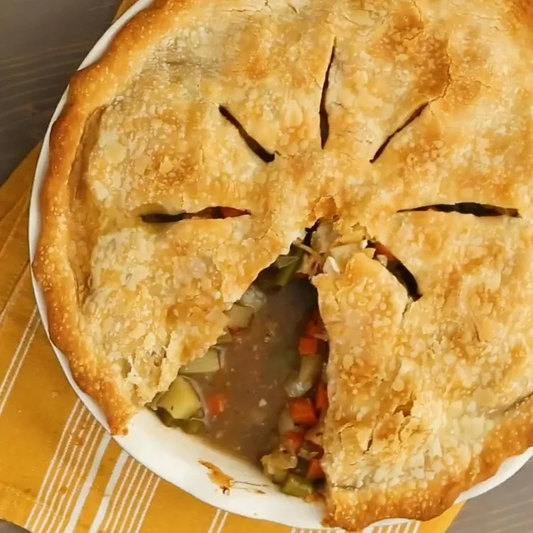

Return Home
Veggie Pot Pie

Description
A vegetarian pot pie, rich with flavour, made with potatoes, mushrooms, cauliflower, green beans, and carrots. Serves 6.
Prep Time = 30 mins
Cook Time: 1 hour
Servings: 6
Ingredients
- 2 Tbsp olive oil
- 8 ounces mushrooms, sliced
- 1 onion, chopped
- 1 clove garlic, minced
- 2 large carrots, diced
- 2 potatoes, peeled and diced
- 2 stalks celery, sliced 1/4 inch wide
- 2 cups cauliflower forets
- 1 cup fresh green beans, trimmed and snapped into 1/2 inch pieces
- 3 cups vegetable broth
- 1 tsp kosher salt
- 1 tsp ground black pepper
- 1/4 cup water
- 2 Tbsp cornstarch
- 2 Tbsp soy sauce
- 1 (14.1 ounce) package double-crust pie pastry, thawed
Steps
-
Gather ingredients. Preheat oven to 425 degrees F (220 degrees C).
-
Heat oil in large skillet or saucepan. Add mushrooms, onions, and garlic; cook for 3 to 5 minutes,
stirring frequently.
-
Stir in carrots, potatoes, and celery, then stir in cauliflower and green beans; add vegetable broth and bring to boil.
-
Reduce heat and simmer until vegetables are just tender, about 5 minutes. Season with salt and pepper.
-
Mix water, cornstarch, and soy sauce in a small bowl until cornstarch is completely dissolved; stir into vegetables and
cook until sauce thickens, about 3 minutes.
-
Roll out 1/2 of dough to line an 11x7 inch baking dish. Pour vegetable filling into the pastry-lined dish. Roll out
remaining dough; arrange over filling, then seal and flute the edges.
-
Bake in preheated oven until pie is golden brown on top, about 30 minutes.
Source: allrecipes